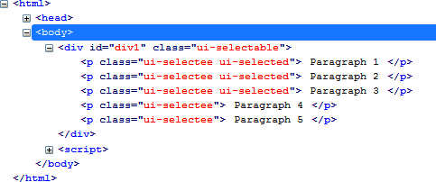
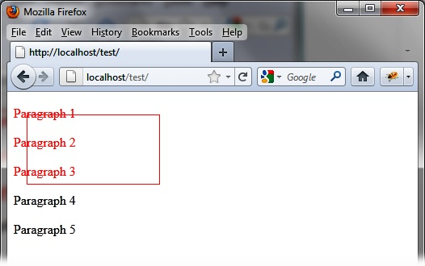
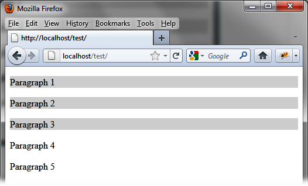
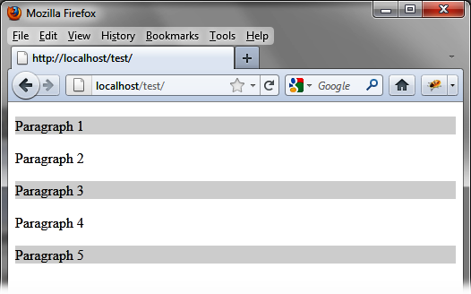

{% include JB/setup %}
{% raw %}
<div>
<div class="book" title="Formatting Content"><div class="book"><div class="book"><div class="book"><h1 class="title2"><a id="formatting_content-id8" class="calibre1"></a>Formatting Content</h1></div></div></div><p class="calibre7">The <code class="literal">selectable ()</code> method displays
    a dotted rectangle symbolizing the selection. In addition, it adds new CSS
    classes to HTML elements that are selectable as well as those
    selected.</p><p class="calibre7">In <a class="ulink" href="ch11s02.html#html_generated_by_the_selectable_open_pa" title="Figure 11-2. HTML generated by the selectable () method">Figure 11-2</a>, for
    example, the HTML generated by jQuery UI after the <code class="literal">selectable ()</code> method changed the HTML (the code
    was recovered using the Firebug extension in Firefox).</p><div class="figure"><a id="html_generated_by_the_selectable_open_pa" class="firstname"></a><div class="book"><div class="book"><a id="I_mediaobject11_d1e10213" class="firstname"></a></div></div><p class="title4">Figure 11-2. HTML generated by the selectable () method</p></div><p class="calibre7">The encompassing <code class="literal">&lt;div&gt;</code>
    element was assigned the <code class="literal">ui-selectable</code>
    CSS class, whereas selectable items it contains have the <code class="literal">ui-selectee</code> class. The first three paragraphs
    being selected have the <code class="literal">ui-selecting</code>
    class. Once the mouse button is released, the selected paragraphs will
    then have the <code class="literal">ui-selected</code> class
    (instead of <code class="literal">ui-selecting</code>).</p><p class="calibre7">Notice that a <code class="literal">&lt;div&gt;</code> was
    created by jQuery UI (<code class="literal">ui-selectable-helper</code> class), which is the dotted
    rectangle representing the selection. This <code class="literal">&lt;div&gt;</code> will be removed from the page when
    the mouse button is released.</p><p class="calibre7">You can use CSS classes of elements to customize the display. For
    example, if we change the CSS classes <code class="literal">ui-selecting</code> and <code class="literal">ui-selected</code> associated with <code class="literal">&lt;p&gt;</code> elements, we should get a new look for
    items being selected and deselected.</p><p class="calibre7">Modify these elements in the HTML by adding a <code class="literal">&lt;style&gt;</code> tag so that the rectangle and the
    selected paragraphs are displayed with a solid red line (<a class="ulink" href="ch11s02.html#customized_display_of_the_selection_in_p" title="Figure 11-3. Customized display of the selection in progress">Figure 11-3</a>). When the mouse is
    released, the selected paragraphs will be displayed on light gray
    background (<a class="ulink" href="ch11s02.html#customized_selected_items" title="Figure 11-4. Customized selected items">Figure 11-4</a>):</p><a id="I_programlisting11_d1e10270" class="firstname"></a><pre class="programlisting">&lt;script src = jquery.js&gt;&lt;/script&gt;
&lt;script src = jqueryui/js/jquery-ui-1.8.16.custom.min.js&gt;&lt;/script&gt;

&lt;link rel=stylesheet type=text/css
      href=jqueryui/css/smoothness/jquery-ui-1.8.16.custom.css /&gt;

&lt;style type=text/css&gt;
  p.ui-selecting {
    color : red;
  }
  p.ui-selected {
    background-color : gainsboro;
  }
  div.ui-selectable-helper {
    border-color : red;
    border-style : solid;
  }
&lt;/style&gt;

&lt;div id=div1&gt;
  &lt;p&gt; Paragraph 1 &lt;/p&gt;
  &lt;p&gt; Paragraph 2 &lt;/p&gt;
  &lt;p&gt; Paragraph 3 &lt;/p&gt;
  &lt;p&gt; Paragraph 4 &lt;/p&gt;
  &lt;p&gt; Paragraph 5 &lt;/p&gt;
&lt;/div&gt;

&lt;script&gt;

$("#div1").selectable ();

&lt;/script&gt;</pre><div class="book"><div class="figure"><a id="customized_display_of_the_selection_in_p" class="firstname"></a><div class="book"><div class="book"><a id="I_mediaobject11_d1e10275" class="firstname"></a></div></div><p class="title4">Figure 11-3. Customized display of the selection in progress</p></div></div><div class="book"><div class="figure"><a id="customized_selected_items" class="firstname"></a><div class="book"><div class="book"><a id="I_mediaobject11_d1e10283" class="firstname"></a></div></div><p class="title4">Figure 11-4. Customized selected items</p></div></div><p class="calibre7">Users can select or deselect any of paragraphs by pressing the Ctrl
    key while clicking an item with the mouse. For example, users can select
    the fifth paragraph and deselect the second and fourth, as shown in <a class="ulink" href="ch11s02.html#a_change_in_the_original_selection" title="Figure 11-5. A change in the original selection">Figure 11-5</a>.</p><div class="book"><div class="figure"><a id="a_change_in_the_original_selection" class="firstname"></a><div class="book"><div class="book"><a id="I_mediaobject11_d1e10297" class="firstname"></a></div></div><p class="title4">Figure 11-5. A change in the original selection</p></div></div></div></div>

{% endraw %}

